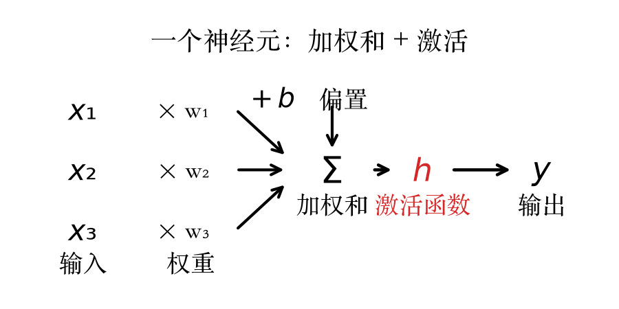
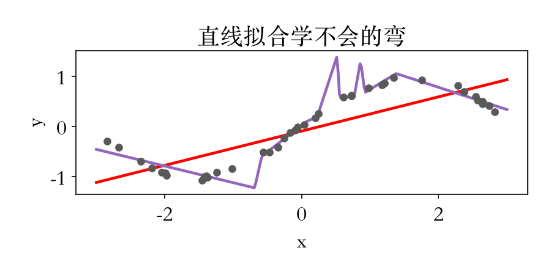
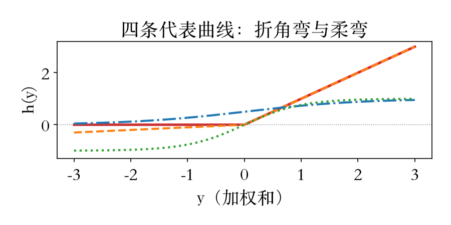

第 5 章开篇 · 从最小单元讲起
换一条路：拆开一个神经元
第 5 章讲深度学习，从最小单元入手。
神经元只做两件事：加权和、激活。
一层把许多神经元排成矩阵运算。
本集回答：激活为什么必须非线性。
依据：原书第 237/269 页
本集三件事
一个神经元怎么算
一层怎么组织
激活为什么必须非线性
正课第三十四集
01 / 8
神经元 · 加权和与激活
一个神经元，两步算完
加权和：每个输入乘权重，再加偏置。
激活：把加权和送进非线性函数。
权重和偏置可学，激活函数事先选。
最早这类单元叫感知器。
依据：原书第 270–271 页

三个输入各乘权重，偏置接入求和，加权和过激活函数 h 输出 y｜程序生成，未用教材或论文原图
正课第三十四集
02 / 8
层 · 矩阵化 · 全连接
一层就是一次矩阵乘法
一层里所有单元排成一个向量。
加权和写成矩阵乘输入向量。
再逐元素套同一个激活函数。
满权重矩阵的层叫全连接层。
依据：原书第 271–272 页
s = Wx，x′ = h(s)
五维输入、十二个单元，逐单元算与矩阵一次算相对偏差为零；只由全连接层组成的网络叫多层感知器
正课第三十四集
03 / 8
实验 · 线性塌缩与 ReLU
没有弯，两层塌成一层
两层都线性，合起来仍是线性。
实测能量 5.56 对 5.56，偏差 10⁻¹⁶。
换成 ReLU，能量降到 0.34。
只占线性基能量的 6.1%。
依据：本集实验；原书第 272 页

数据点、直线拟合与 ReLU 基拟合对比｜程序生成，未用教材或论文原图
正课第三十四集
04 / 8
激活函数族 · ReLU 会死
激活函数都弯，ReLU 还可能死
原书函数族列了九种，本集画四条。
ReLU：负数归零，正数原样通过。
手工配权重 −1、偏置 −3.5，加权和最大 −0.66。
全部数据不激活，对权重梯度恒为零。
依据：原书第 272–273 页

四条代表曲线：ReLU、leaky ReLU、sigmoid、tanh｜程序生成，未用教材或论文原图
正课第三十四集
05 / 8
收束 · 三件事
三件事收束，等训练开转
神经元＝加权和＋激活。
一层＝一次矩阵乘法＋逐元素激活。
激活必须非线性，否则两层塌一层。
第一层权重还是随机数，尚未训练。
依据：原书第 270–272/284 页
对应原书式子
式 5.45 / 5.46：一个神经元
式 5.47 / 5.48：一层
式 5.49：ReLU
正课第三十四集
06 / 8
作业 · 纸上与脚本
两道作业：手算与脚本
手算一个三输入神经元的前向。
至少一组加权和为负、一组为正。
分别过 ReLU 和恒等，比较输出。
把 ReLU 基从 12 改成 24，记录能量。
依据：本集实验
动手提示
基个数增加后，能量可能降也可能不降
再换几个随机种子比一比
自配死单元：偏置往负的方向调
正课第三十四集
07 / 8
移交 · 下一集
下一集：网络怎么学
先定义损失函数，误差才有得降。
再用梯度下降迭代修改权重。
反向传播把误差传回每个权重。
下一集讲损失和梯度下降。
依据：原书第 280/284 页
接下来
5.3.4 损失函数
5.3.5 梯度下降
再下一集：反向传播
正课第三十四集
08 / 8